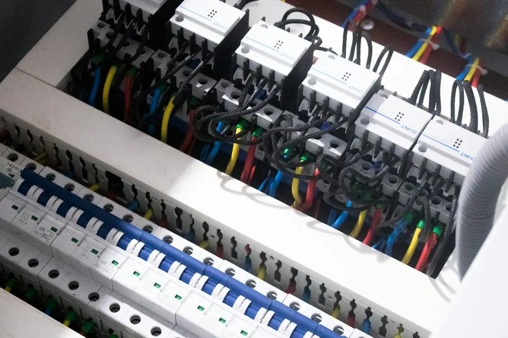

Electrical repairs in Paddington can involve a tripping safety switch, dead circuit, flickering light, older ceramic-fuse board, renovation wiring or a failed power point. Describe when the fault occurs, what rooms are affected and whether appliances were connected. A licensed electrician should trace the cause, explain the scope and provide a clear price before work starts. After installation work, Queensland contractors must provide a certificate of testing and compliance.
For homeowners comparing electrical repairs paddington options, the useful starting point is identifying the fault pattern, the age of the wiring and whether the property is an older Queenslander, workers' cottage or terrace.
Electrical Repairs Paddington Explained
The Electrician Paddington website describes fault work around tripping safety switches, dead circuits, flickering lights and power points that stop working. Before requesting help, note whether the problem appears when the oven, air conditioner or another appliance starts, and whether it happens at night or in rain. That pattern can help identify which circuit needs attention.
If a safety switch trips again immediately after resetting, or still trips with everything unplugged, the wiring becomes a stronger possibility than a single appliance. Half the house going dead can also indicate a circuit fault. Repeatedly resetting the switch without finding the cause does not resolve the underlying problem.
Smoke, a burning smell or an injury changes the response. The published guidance says to call 000 first in those circumstances. For less urgent faults, record which rooms lose power, which outlets are affected and what changed immediately beforehand.
Older Paddington homes need a different inspection approach
Old timber Queenslanders, workers' cottages and terraces may contain wiring added over decades. A cable run can pass through roof space or under the floor, particularly where a lined timber home needs new wiring without opening finished walls. A fault may therefore require circuit-by-circuit isolation and testing rather than a quick switch replacement.
Switchboard age is another useful clue. A board fitted with ceramic fuses may not have safety switches, which are designed to cut power when current leaks. An upgrade can place that protection across the home's circuits, but the quote should state whether the work is limited to the board or includes other wiring changes.
For homes in Paddington, Red Hill, Milton, Petrie Terrace, Bardon or Ashgrove, describe the building type as well as the suburb. Character construction, access under floors and changes made during earlier renovations can affect how the work is scoped.
Match the job to the right scope
Not every electrical problem calls for the same service. A fault-finding visit focuses on tracing the cause of a tripping circuit, dead outlet or flickering light. A defined installation may instead involve extra power points, moved switches, dimmers, weatherproof outdoor outlets, lighting, fans or LED downlights.
Renovation work needs a room-by-room list. Kitchen and bathroom changes may require new circuits, while an older property may need a broader rewire. Smoke alarms may need replacement or interconnection so that they sound together when one detects smoke. An electric vehicle charger may also require switchboard capacity work before the charger is fitted in a garage or carport.
- Describe the symptom and when it occurs.
- List every room, outlet, light or appliance affected.
- Separate fault repairs from planned upgrades.
- Ask what access, testing and paperwork are included.
Compare a fault visit with planned upgrade work
A written scope helps prevent two different jobs being treated as if they were interchangeable. Fault tracing is investigative, while a new power point or switchboard upgrade is usually a more defined installation. The final price can differ because the work involved is different.
| Job type | Useful information | Question to ask |
|---|---|---|
| Fault finding | Trip pattern, affected rooms and connected appliances | What testing will identify the cause? |
| Planned upgrade | Location, access, fixtures and future use | What is included in the written scope? |
A fault behind a wall or inside a lined Queenslander can take longer to reach than a problem at the board. Ask whether the quoted work covers investigation only, the repair itself, or both. If the fault changes the scope, request an explanation before additional work begins.
What to check before and after the work
Queensland homeowners can do only simple tasks such as changing a light bulb, tube or fuse, and resetting a breaker or safety switch. Work beyond those tasks belongs to a licensed electrician. The contractor's licence number should appear on the quote so it can be checked through the online Electrical licence holder search.
Before work starts, confirm the affected circuits, the proposed repair or installation, the access assumptions and the price. After installation work is complete, keep the certificate of testing and compliance. It records that the completed electrical installation has been tested and documented.
For nearby locations including Auchenflower, Kelvin Grove, Spring Hill, West End, Herston, Newmarket, Toowong, South Brisbane, Highgate Hill and Wilston, the same preparation remains useful: explain the symptom, identify the property type and get the scope in writing. A separate local guide is available at the related Paddington electrical repairs guide.
- Record the symptom. Write down what loses power, when it happens and which appliances or weather conditions are present.
- Describe the property. Mention whether the home is an older Queenslander, workers' cottage, terrace or a newer building.
- Request a written scope. Ask whether the price covers fault finding, repair, installation, access and any likely paperwork.
- Check the licence. Use the licence number on the quote to confirm the electrical contractor responsible for the work.
- Keep the certificate. Retain the certificate of testing and compliance after installation work is finished.
| Clue | What to record | What it may help clarify |
|---|---|---|
| Safety switch trips | Whether it resets and what was unplugged | Circuit or appliance investigation |
| Dead power points | Rooms and outlets affected | Extent of the fault |
| Flickering lights | When it happens and nearby loads | Testing requirements |
| Older switchboard | Ceramic fuses or missing safety switches | Upgrade scope |
Common questions
What should I tell an electrician about a tripping safety switch? Explain when it trips, which rooms lose power and whether it happens with everything unplugged. Also mention appliances, rain or other conditions that appear connected to the fault.
Can I replace electrical wiring myself in Queensland? The published guidance limits homeowners to simple tasks such as changing a light bulb, tube or fuse, and resetting a breaker or safety switch. Work beyond those tasks should be handled by a licensed electrician.
Why can an older Queenslander need more investigation? Wiring in older Queenslanders, workers' cottages and terraces may have been added over decades. Access through roof space or under the floor can affect how a fault or renovation circuit is traced and repaired.
What should a quote for electrical work explain? It should distinguish fault investigation from a defined installation, identify the affected circuits or locations, and state what access, repair work and paperwork are included. Ask before extra work changes the scope.
What document should I keep after installation work? Queensland contractors must provide a certificate of testing and compliance when installation work is finished. Keep it with the property's electrical records.
This guide covers fault clues, older-home wiring, electrical job scopes, licensing checks and compliance paperwork for Paddington homes.